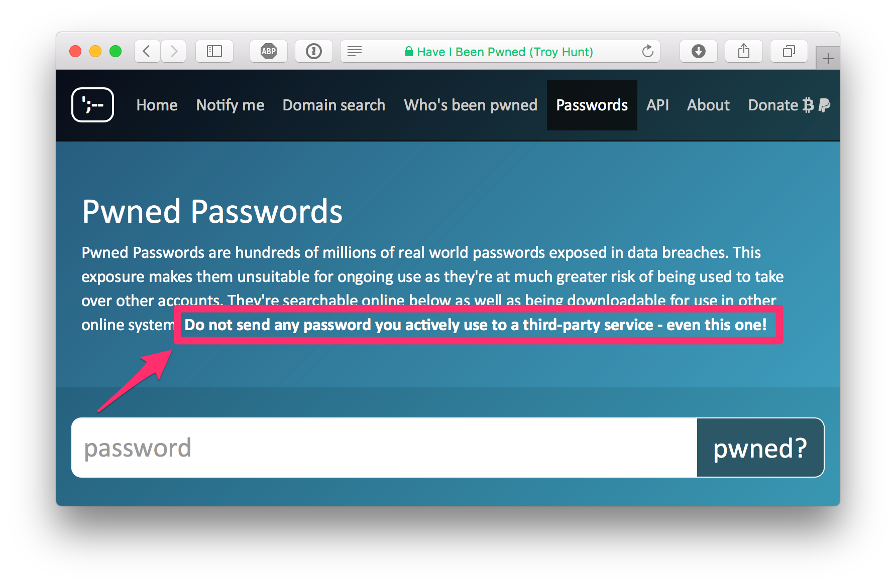
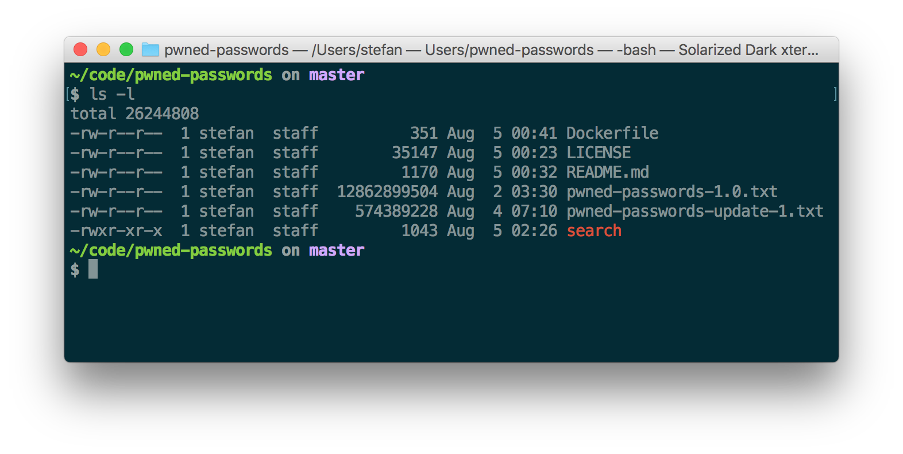
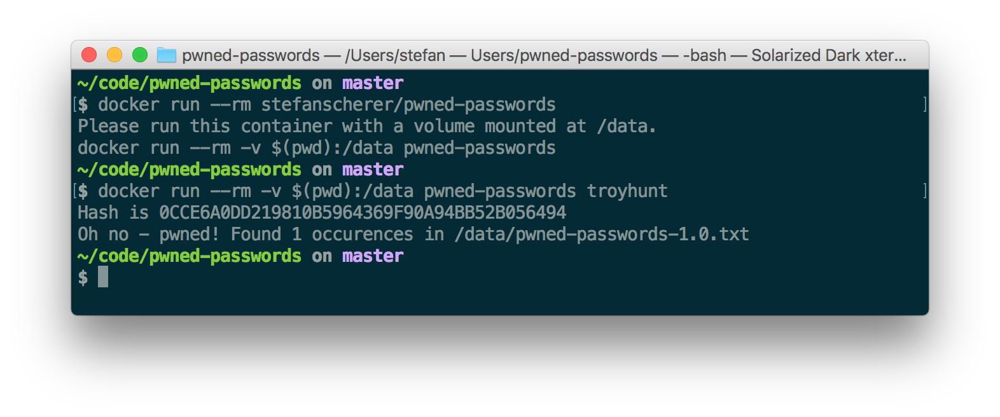
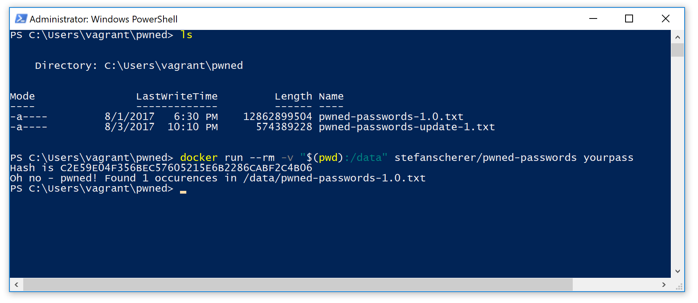
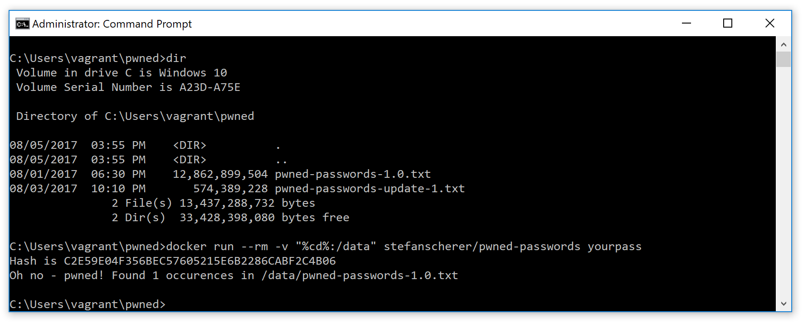
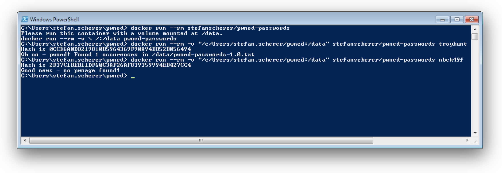

This week Troy Hunt, a security researcher announced a freely downloadable list of pwned passwords. Troy is the creator of Have I Been Pwned? website and service that will notify you when one of your registered email addresses have been compromised by a data breach.
In his latest blog post he introduced 306 Million Freely Downloadable Pwned Passwords with an update of another 14 Million just on the following day. He also has setup a online search at https://haveibeenpwned.com/Passwords
You can enter passwords and check if they have been compromised. But do not enter actively used passwords here, even if Troy is a nice person living in sunny Australia.

My recommendation is
- If you are in doubt if your password has been pwned, just change it first and then check the old one in the online form.
- Use a Password manager like 1Password to create an individual long random password for each service you use.
But the huge password list is still quite interesting to work with.
Let's build a local search
What you can do is download the list of passwords (about 5 GByte compressed) and search locally in a safe place. You won't get the cleartext passwords, but only SHA1 sums of them. But we can create SHA1 sums of the passwords we want to search in this huge list.
You can download the files that are compressed with 7-Zip. You also need a tool to create a SHA1 sum of a plain text. And then you need another tool, a database or algorithm to quickly search in that text file that has nearly 320 Million lines.
Use Docker for the task
I immediately thought of a Container that has all these tools installed. But I didn't want to add the huge password lists into that container as it would build a Docker image of about 12 GByte or probably 5-6 GB Docker image on the Docker Hub.
The password files should be persisted locally on your laptop and mounted into the container to search in them with the tools needed for the task.
And I want to use some simple tools to get the work done. A first idea was born in the comments of Troys blog post where someone showed a small bash script with grep to search in the file.
I first tried grep, but this took about 2 minutes to find the hash in the file. So I searched a little bit and found sgrep - a tool to grep in sorted files. Luckily the password files are sorted by the SHA1 hash. But I found only the source code and there is no standard package to install it. So we also need a C compiler for that.
In times before Docker you had a lot of stress installing many tools on your computer. But let's see how Docker can help us with all these steps.
Build the Docker image
I found the Sources of sgrep on GitHub and we will need Make and a C compiler to build the sgrep binary.
I will use a multi-stage build Dockerfile and explain every single line. You can build the image line by line and see the benefits of build caches while working on the Dockerfile. So after adding a line to the file you can run docker build -t pwned-passwords . to build and update the image.
For the beginning let's choose a small Linux base image. We will name the first stage as build. So the Dockerfile starts with
FROM alpine:3.6 AS build
The next step is we have to install Git, Make and the C compiler with its header files.
RUN apk update && apk add git make gcc musl-dev
Now we clone the GitHub repo with the source code of sgrep.
RUN git clone https://github.com/colinscape/sgrep
In the next line I'll create a bin folder that is needed for the build process. Then we go to the source directory and run the make command as there is a Makefile in that directory.
RUN mkdir sgrep/bin && cd sgrep/src && make
After these steps we have the sgrep binary compiled for Alpine Linux. But we also have installed a ton of other tools.
Now put all these instructions into a Dockerfile and build the Docker image.
$ docker build -t pwned-passwords .
Let's inspect all image layers we have created so far.
$ docker history --format "{{.ID}}\t{{.Size}}\t{{.CreatedBy}}" pwned-passwords
78171a118279 24.5kB /bin/sh -c mkdir sgrep/bin && cd sgrep/src...
2323bcb14b5f 93.6kB /bin/sh -c git clone https://github.com/co...
8ec1470030af 119MB /bin/sh -c apk update && apk add git make ...
7328f6f8b418 0B /bin/sh -c #(nop) CMD ["/bin/sh"]
<missing> 3.97MB /bin/sh -c #(nop) ADD file:4583e12bf5caec4...
As you can see we now have a Docker image of more than 120 MByte, but the sgrep binary is only 15 KByte. Yes, this is no typo. Yes, we will grep through GByte of data with a tiny 15 KByte binary.
Multi-stage build for the win
With Docker 17.05 and newer you can now add another FROM instruction and start with a new stage in your Dockerfile. The last stage will create the final Docker image. So every instruction after the last FROM defines what goes into the image you want to share eg. on Docker Hub.
So let's start our final stage of our Docker image build with
FROM alpine:3.6
The last stage does not need a name. Now we have an empty Alpine Linux again, all the 120 MByte of development environment won't make it into the final image. But if you build the Docker image more than once the temporary layers are still there and will be reused if they are unmodified. So the Docker build cache helps you speed up while working on the shell script.
In the previous build stage we have created the much faster sgrep command. What we now need is a small shell script that converts a plaintext password into a SHA1 sum and runs the sgrep command.
To create a SHA1 sum I'll use openssl command. And it would be nice if the shell script can download the huge files for us. As the files are compressed with 7-zip we also need wget to download and 7z to extract them.
In the next instruction we install OpenSSL and the 7-Zip tool.
RUN apk update && apk add openssl p7zip
The COPY instruction has an option --from where you can specify another named stage of your build. So we copy the compiled sgrep binary from the build stage into the local bin directory.
COPY --from=build /sgrep/bin/sgrep /usr/local/bin/sgrep
The complete shell script is called search and can be found in my pwned-passwords GitHub repo. Just assume we have it in the current directory. The next COPY instruction copies it from your real machine into the image layer.
COPY search /usr/local/bin/search
As the last line of the Dockerfile we define an entrypoint to run this shell script if we run the Docker container.
ENTRYPOINT ["/usr/local/bin/search"]
Now append these lines to the Dockerfile and build the complete image. You will see that the first layers are already cached and only the last stage will be built.
The search script
You can find the search script in my GitHub repo as well as the Dockerfile. You only need these two tiny files to build the Docker image yourself.
#!/bin/sh
set -e
if [ ! -d /data ]; then
echo "Please run this container with a volume mounted at /data."
echo "docker run --rm -v \ $(pwd):/data pwned-passwords $*"
exit 1
fi
FILES="pwned-passwords-1.0.txt pwned-passwords-update-1.txt"
for i in $FILES
do
if [ ! -f "/data/$i" ]; then
echo "Downloading $i"
wget -O "/tmp/$i.7z" "https://downloads.pwnedpasswords.com/passwords/$i.7z"
echo "Extracting $i to /data"
7z x -o/data "/tmp/$i.7z"
rm "/tmp/$i.7z"
fi
done
if [[ $1 != "" ]]
then
PWD=$1
else
PWD="password"
echo "checking $PWD"
fi
hash=`echo -n $PWD | openssl sha1 | awk '{print $2}' | awk 'BEGIN { getline; print toupper($0) }'`
echo "Hash is $hash"
totalcount=0
for i in $(sgrep -c $hash /data/*.txt)
do
file=$(echo "$i" | cut -f1 -d:)
count=$(echo "$i" | cut -f2 -d:)
if [[ $count -ne 0 ]]; then
echo "Oh no - pwned! Found $count occurences in $file"
fi
totalcount=$(( $totalcount + $count ))
done
if [[ $totalcount -eq 0 ]]; then
echo "Good news - no pwnage found!"
else
exit 1
fi
Build the final image
Now with these two files, Dockerfile and search shell script build the small Docker image.
$ docker build -t pwned-passwords .
Let's have a look at the final image layers with
$ docker history --format "{{.ID}}\t{{.Size}}\t{{.CreatedBy}}" stefanscherer/pwned-passwords
24eca60756c8 0B /bin/sh -c #(nop) ENTRYPOINT ["/usr/local...
c1a9fc5fdb78 1.04kB /bin/sh -c #(nop) COPY file:ea5f7cefd82369...
a1f4a26a50a4 15.7kB /bin/sh -c #(nop) COPY file:bf96562251dbd1...
f99b3a9601ea 10.7MB /bin/sh -c apk update && apk add openssl p...
7328f6f8b418 0B /bin/sh -c #(nop) CMD ["/bin/sh"]
<missing> 3.97MB /bin/sh -c #(nop) ADD file:4583e12bf5caec4...
As you can see, OpenSSL and 7-Zip take about 10 MByte, the 16 KByte sgrep binary and the 1 KByte shell script are sitting on top of the 4 MByte Alpine base image.
I also have pushed this image to the Docker Hub with a compressed size of about 7 MByte. If you trust me, you can use this Docker image as well. But you will learn more how multi-stage builds feel like if you build the image yourself.
Search for pwned passwords
We now have a small 14.7 MByte Linux Docker image to search for pwned passwords.
Run the container with a folder mounted to /data. If you forgot this, the script will show you how to run it.
Running the container for the first time it will download the two password files (5 GByte) which may take some minutes depending on your internet connectivity.
After the script has downloaded everything two files should appear in the current folder. For me it looks like this:

Now search for passwords by adding a plaintext password as an argument
$ docker run --rm -v $(pwd):/data pwned-passwords troyhunt
Hash is 0CCE6A0DD219810B5964369F90A94BB52B056494
Oh no - pwned! Found 1 occurences in /data/pwned-passwords-1.0.txt
If you don't trust my script or the sgrep command, the run the container without network connectivity
$ docker run --rm -v $(pwd):/data --network none pwned-passwords secret4949
Hash is 6D26C5C10FF089BFE81AB22152E2C0F31C58E132
Good news - no pwnage found!
So you have luck, you can securely check that your password secure4949 hasn't been breached. But beware this is still no good password :-)

Works on Windows
If you have Docker installed on your Windows machine, you can also use my Docker image or build the image yourself.
With Docker 4 Windows it only depends on the shell you use.
For PowerShell the command to run the image is
docker run --rm -v "$(pwd):/data" pwned-passwords yourpass

And if you prefer the classic CMD shell use this command
docker run --rm -v "%cd%:/data" pwned-passwords yourpass

On my Windows 7 machine I have to use Docker Machine, but even here you can easily search for pwned passwords. All you have to do is mount a directory for the password files as /data into the container.
docker run --rm -v "/c/Users/stefan.scherer/pwned:/data" stefanscherer/pwned-passwords troyhunt

Conclusion
You now know that there are Millions of passwords out there that may be used in a brute force attack to other online services.
So please use a password manager instead of predictable patterns how to modify passwords for different services.
You also have learned how Docker can keep your computer clean but still compile some open source projects from source code.
You have seen the benefits of multi-stage builds to create and share minimal Docker images without the development environment.
And you now have the possibility to search your current passwords in a save place without leaking it to the internet. Some other online service may collect all the data entered into a form. So keep your passwords secret and change
If you want to hear more about Docker, follow me on Twitter @stefscherer.